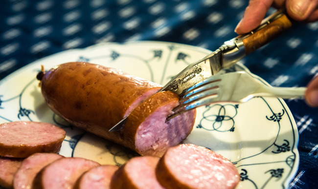

Sausages are a meat product usually made from ground meat, often pork, beef, or poultry, along with salt, spices and other flavourings. Other ingredients such as grains or breadcrumbs may be included as fillers or extenders. Some sausages include other ingredients for flavour.
The word "sausage" can refer to the loose sausage meat, which can be formed into patties or stuffed into a skin. When referred to as "a sausage," the product is usually cylindrical and encased in a skin. Typically, a sausage is formed in a casing traditionally made from intestine but sometimes from synthetic materials. Sausages that are sold raw are cooked in many ways, including pan-frying, broiling and barbecuing. Some sausages are cooked during processing and the casing may then be removed.
The word "sausage" was first used in English in the mid-15th century, spelled "sawsyge". This word came from Old North French saussiche (Modern French saucisse)". The French word came from Vulgar Latin salsica (sausage), from salsicus (seasoned with salt).
Sausage making is a traditional food preservation technique. Sausages may be preserved by curing, drying (often in association with fermentation or culturing, which can contribute to preservation), smoking, or freezing. Some cured or smoked sausages can be stored without refrigeration. Most fresh sausages must be refrigerated or frozen until they are cooked.
Sausages come in a huge range of national and regional varieties, which differ by their flavouring or spicing ingredients (garlic, peppers, wine, etc.), the meat(s) used in them and their manner of preparation.
